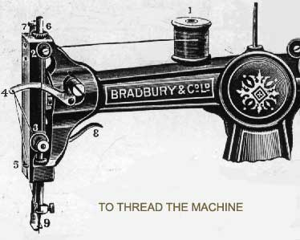
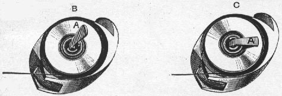
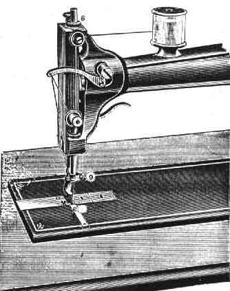
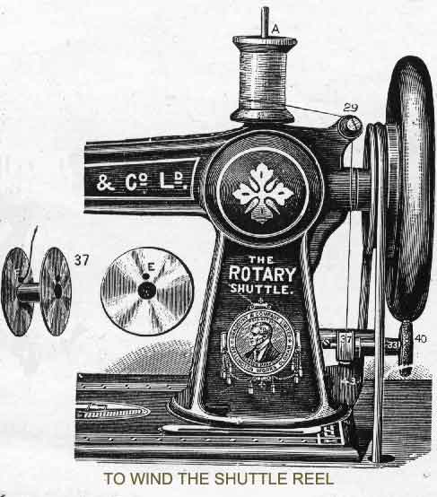
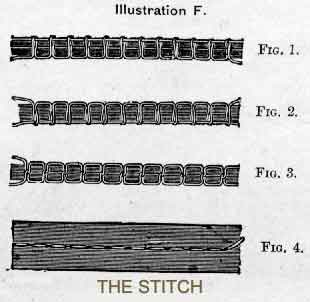
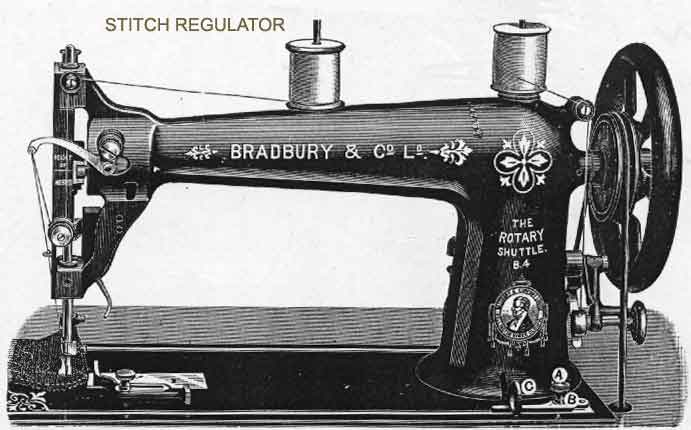

Bear this one fact in mind, that a thorough understanding of the contents of this Direction Book will enable you to become complete master of the Sewing Machine, as it gives more elaborate instructions than any other that you may receive
The first thing to understand is the treadle motion. First lift the presser-foot from the feed by the lift-handle, place the feet upon the treadle, disengage the fly-wheel, and run the loose wheel towards you, allowing the feet to move freely with the motion thus given for a time, until the motion becomes easy; then put the machine in motion with the fly-wheel, and again run it a little when all is in motion.
The next important to this is the threading of the Machine and shuttle; then setting the needle; then selecting the needles and thread to be used with the fabric intended to be sewed; then regulating the tensions on the threads; then regulate the length of the stitch; then to put the work in and take it out of the Machine; then the proper pressure of the presser-foot on the cloth; then oiling the Machine; then to wind the bobbin; then the names of all the important parts of the Machine and their functions.
The Machine will sew in almost any condition of the tensions, but to do absolutely first-class sewing on all classes of work, a thorough knowledge of the tensions, and the proper sizes of needles and thread, and length of stitch suitable to the fabric intended to be sewed, is necessary.
Do not fill the bobbin quite full of thread. Oil the Machine thoroughly and frequently - it will last longer and stand harder usage.

Place the spool of thread on spool spindle (1), then pass the thread between the washers (2), down and between the tension washers (3), then through the small spring, in front of the tension washer (3), and take-up (4), behind the wire staple (5), inside wire guide on needle clamp (9), and lastly through the eye of the needle from left to right.
No. 7 is a milled head screw for altering the pressure on the work being sewn. No. 8 is the lift-handle for the presser-foot.
The screw B is for applying a light tension on the reel (by the finger A in illustration below), and to prevent the thread getting over the flange of reel.
It seldom requires altering after leaving the factory, but if necessity should arise it can be increased by turning the screw slightly to the right, and to the left to decrease the tension.
Take the shuttle in the left hand; and with the thumb nail or screwdriver lift the tongue A as shown at illustration B; the reel will then be easily taken out.

After winding the reel, as directed at page 4, take it in the right hand with the tongue A of the shuttle B uplifted in the left hand; place the reel in the shuttle, taking care that the thread comes off the reel exactly as shown in the two illustrations; then press down the tongue A on the reel as shown at C; The shuttle is then ready for placing in its position in the machine, taking care to leave about three inches of thread off the reel to commence sewing with.
First withdraw the shuttle cover to the right hand, then take out the shuttle with the finger and thumb. The proper position for removing the shuttle is when the needle bar is a little short of being at its lowest point. After placing the shuttle in its position take care to close the slide before commencing to sew. The presser-foot lifter should be up when not working.

Place the needle in the needle bar with the short groove towards the shuttle, and the long groove on the left hand, see that the eye of the needle is from right to left and in a line with the mark A engraved on the shuttle cover slide, and when the eye is level with the steel needle plate, the mark on the top of the needle bar must be level with the top of the arm; when it is in its right position secure it firmly by the screw (No 9).
A more exact way of fixing the needle is by putting a fine pin through the eye of the needle, letting it rest across the plate; then move the Machine till the mark at the top is level, then secure it; if the needle is properly set a good loop will be made, if not set right miss-stitches will occur.
If the needle is improperly set it may throw the loop to one side, so that the shuttle will pass by instead of through the loop. Take note to have the eye in a line with the mark A engraved on the shuttle cover slide, and the eye of the needle level with the plate when the mark on the needle bar is level with the top of the arm, or the mark above the tension is in a line with the bottom of the needle cam. Miss-stitches will sometimes occur if the needle is too large or too small for the thread being used, or by the point of the needle having become blunted.
.
Place the spool of thread to wind from on the spindle A, then pass the thread between the tension washers (No. 29), disengage the fly-wheel by the piston in same, put the winder ring in contact with the fly-wheel by lifting up at No. 33, press down the presser spring (No.43), place the reel to be filled on the spindle, the small hole at E fitting a small pin on the winder spindle, pass the thread through the small hole on the opposite side, as shown in F, leaving about an inch of thread through; before commencing to wind tighten the thread, then commence by running the wheel in the opposite direction to that when sewing; do not quite fill the reel full of thread, but leave two or three coils short of being full; take off the reel and push down the winder (33) to be out of contact with the wheel when sewing.
Three or four inches of thread are drawn through the eye of the needle and held with the left hand loosely, while the needle is moved down into the shuttle race, and as it returns a loop is formed and the shuttle passes into it; then by pulling on the thread in the left hand it draws the shuttle thread up through the needle hole in the thread plate. THE MACHINE IS THEN READY FOR OPERATION.

To regulate the stitch, the tension on the shuttle being given and seldom requiring alteration, the top thread must be regulated so as to produce sewing like figures 3 and 4.
The top tension is turned to the right for a tight tension, and to the left for a loose tension. But a very slight turn is necessary to make a great alteration in the tension. If the top tension is too strong, the bottom thread will be pulled through to the top, as shown at Fig. 1.
If it is not strong enough, the top thread will lay on the underside, as shown at Fig. 2.
If both tensions are right, the threads will make a stitch the same as shown at Figs. 3 and 4.
Two of these are sent with each Machine, having a large and small needle hole; the smaller one is generally sent fixed in the Machine, and can be used with needles up to No. 2 1/2; if larger than this is used, the plate with the larger hole must be used, or breaking of threads and bad work will be the result.

For a long stitch loose the screw A, move the finger B away from the arm the required length, pulling the lever C so that it bears on the finger B, then tighten the screw A. By pushing the lever C nearer the arm of the machine a short stitch is made.
TO REVERSE THE FEEDER, push the lever C as close to the arm as it will go.